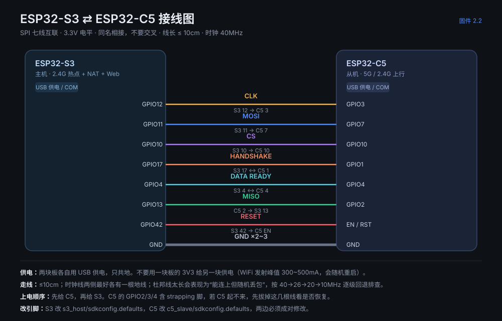

ESP32-C5 收 5GHz 回程 · ESP32-S3 发 2.4GHz 热点 · SPI 互联 · 单层 NAT
这是一台用两块 ESP32 搭出来的 WiFi 中继器：一块负责"收"（连上级路由的 5GHz），一块负责"发"（给自己的设备开 2.4GHz 热点）。两者用 7 根杜邦线连起来，中间跑的是以太网帧。
因为 ESP32-C5 是单射频：STA 连上 5GHz 后，它自己开的热点也只能在 5GHz；而 ESP32-S3 只有 2.4GHz，连不上 5GHz 的热点。所以"5G 收 + 2.4G 发"必须靠有线把流量过给另一颗芯片。
顺带得到一个好处：热点信道和上行信道彻底解耦。2.4G 热点可以钉死在最干净的信道，不会因为上级路由换信道而把客户端全体踢下线。
| 物料 | 要求 | 说明 |
|---|---|---|
| ESP32-S3 开发板 | N16R8（16MB Flash + 8MB PSRAM） | ESP32-S3-DevKitC-1 即可 |
| ESP32-C5 开发板 | 任意 C5 开发板 | 推荐带外置天线接口的版本，5G 对天线敏感 |
| 杜邦线 | 7 根信号 + 2 根地，≤10cm | 太长会随机丢包 |
| USB 线 / 电源 | 两根，各自供电 | 不要用一块板给另一块供电 |
| 电脑 | Windows / macOS / Linux | 只用来刷固件，日常使用不需要 |

| 信号 | ESP32-S3 | ESP32-C5 | 作用 |
|---|---|---|---|
| CLK | GPIO12 | GPIO3 | SPI 时钟 |
| MOSI | GPIO11 | GPIO7 | S3 → C5 数据 |
| MISO | GPIO13 | GPIO2 | C5 → S3 数据 |
| CS | GPIO10 | GPIO10 | 片选 |
| HANDSHAKE | GPIO17 | GPIO1 | 握手 / 中断 |
| DATA READY | GPIO4 | GPIO4 | 数据就绪 |
| RESET | GPIO42 | EN | S3 复位 C5 |
| GND | GND | GND | 共地 ×2~3 |
出厂已编译好的整片镜像在 dist/ 目录，一次写完就能跑，不需要装 ESP-IDF。
| 文件 | 芯片 | 烧录地址 | 大小 |
|---|---|---|---|
s3_host_merged.bin | ESP32-S3 | 0x0 | 约 1.1 MB |
c5_slave_merged.bin | ESP32-C5 | 0x0 | 约 1.2 MB |
# 插上 S3，在设备管理器里看是 COM 几
esptool --chip esp32s3 -p COM5 -b 460800 write-flash 0x0 dist\s3_host_merged.bin
# 拔下 S3，插上 C5
esptool --chip esp32c5 -p COM6 -b 460800 write-flash 0x0 dist\c5_slave_merged.bin需要先装 esptool：pip install esptool。用 esptool 5.x 时命令名是 esptool，旧版写 esptool.py。
powershell -ExecutionPolicy Bypass -File tools\flash.ps1 -Port 5 -Target s3
powershell -ExecutionPolicy Bypass -File tools\flash.ps1 -Port 6 -Target c5--，是形如 192.168.x.y 的地址「校园网」是场景，「认证方式」是 802.11 这一层要不要密码 —— 两件事，别混。 同一个学校，教学楼可能是开放网、宿舍可能是 802.1X、实验室可能是普通密码。 判断只看手机连它时的表现：
| 手机连它的时候 | 网页里选这个 |
|---|---|
| 不用输密码就连上，随后浏览器自动弹登录页 | 开放网络（网页认证 Portal） |
| 连的时候系统弹窗要用户名 + 密码 | 校园网 / 企业版 802.1X |
| 要输一个固定 WiFi 密码 | 密码 |
reason 210（安全不兼容）。这不是密码错，是模式选错。
认证方式选「开放网络（网页认证 Portal）」，不用填 WiFi 密码，保存重启即可。
连上后上行 IP 一般是 10.x.x.x 这种内网地址，属正常。
如果打开网页被跳到学校登录页：随便用一台连着你热点的手机/电脑，在门户页用学号登录一次就行。 所有客户端经 NAT 出去都是设备这一个 IP，门户放行这个 IP 后，全部设备一起能上网。
如果连的时候是系统弹窗要账号密码，按下面填：
| 字段 | 怎么填 |
|---|---|
| 认证方式 | 选「校园网 / 企业版 802.1X」 |
| EAP 方法 | PEAP（绝大多数学校）；不行再试 TTLS |
| TTLS 内层 | MSCHAPv2（只有选 TTLS 才用得上） |
| 用户名 | 学号 / 工号，一般不带 @ 后缀（按学校说明） |
| 密码 | 上网密码（不是校园网门户的验证码） |
| 匿名身份 | 留空；学校要求时填 anonymous |
| 服务器证书 | 选「不校验」。学校多是自签证书，选校验会一直失败 |
| DNS | 选「自定义」，填学校给的 DNS（校园网常屏蔽 8.8.8.8 这类公共 DNS） |
| 区域 | 说明 |
|---|---|
| 顶部徽标 | 已联网 / 正在连接 / 待配置 / C5 未就绪 / 设备无响应 |
| 上行网络卡片 | 当前连的上级 SSID、信号强度柱、实时信号曲线（最近 2 分钟）、频段与信道、上级分配的 IP |
| 四个指标 | 在线客户端数、运行时长、空闲内存、本机热点信道 |
| 已连接设备 | 连在你热点上的设备，显示 MAC、信号、协议（11n / 11g / 11b） |
| 选择上行 WiFi | 扫描并一键填入。列表里蓝色标签 = 5GHz 网络 |
| 上行设置 | SSID / 频段 / 认证方式（密码 / 802.1X / 开放 Portal）/ 密码；企业版还会展开 EAP 方法、用户名、匿名身份、证书校验 |
| 热点设置 | 热点 SSID / 密码 / 信道 / DNS（跟随上级 or 自定义）。密码留空表示不修改 |
| 上行网络下面的小字 | 人话状态：已联网 / 正在等 IP / 连不上＋具体原因（密码错、找不到、需要企业版…） |
| 维护 | 重启设备、恢复出厂 |
| 显示 | 含义 | 怎么办 |
|---|---|---|
| 已联网 | 一切正常 | — |
| 正在连接 | 已配置上行，但还没连上 | 等 15 秒；仍不行看「选择上行 WiFi」里信号是否太弱 |
| 待配置 | 还没设置上级 WiFi | 走第五节的配网流程 |
| C5 未就绪 | S3 联系不上 C5 | 查 SPI 接线、C5 供电、C5 是否刷了从机固件 |
| 设备无响应 | 网页 4 秒内拿不到状态 | 设备在重启或卡住，断电重来 |
恢复后热点变回 ESP32-NAT / 12345678，需要重新配网。
| 项目 | 实测范围 | 说明 |
|---|---|---|
| 端到端吞吐 | 8~15 Mbps | 瓶颈在 SPI 隧道和 2.4G 空口，不在 5G 回程 |
| 延迟 | 3~10 ms（局域网） | 比直接用上级路由多一跳 |
| 客户端数 | 建议 ≤ 8 | RAM 限制，超过后容易掉线 |
| 覆盖 | 2.4G 常规覆盖 | 换算成面积约一层楼 |
| 现象 | 原因 / 处理 |
|---|---|
| 网页一直「读取中」 | 1.0 的旧 bug 已修。确认刷的是 dist/s3_host_merged.bin（2.0），并强制刷新浏览器（Ctrl+F5） |
| 扫描列表是空的 | HANDSHAKE / DATA READY 接反，或 C5 没上电。对照接线图逐根查 |
| 徽标「C5 未就绪」 | SPI 接线、C5 供电、C5 固件三选一。看 S3 串口有没有 remote wifi ready |
| 连上了但没网 | 看「上级 IP」是不是 --，以及上行网络下面那行提示：① IP 是 -- → 上行没连上（看原因：密码错 / 找不到 / 需要企业版） ② IP 有了但打不开网页 → 多半是 DNS。把 DNS 改成「自定义」填 223.5.5.5 试试 ③ 手机显示"已连接但无法上网" → 手机缓存了旧配置，在手机上「忘记此网络」重连一次 |
| 显示「四次握手超时」 | 密码错了，或者这是校园网（要切到 802.1X 认证方式） |
| 显示「需要企业版认证」 | 这个网络是 WPA2-Enterprise，认证方式要选 802.1X 并填用户名密码 |
| 提示「C5 协处理器未就绪」 | SPI 接线 / C5 供电 / C5 固件。看 S3 串口有没有 remote wifi ready |
| 能开网页但很慢 | 信号弱。挪位置，让 RSSI 高于 -70dBm |
| 偶发丢包、ping 抖动 | SPI 线太长。剪短、多接地，或在 sdkconfig 把 SPI 降到 10MHz 重编 |
| C5 反复重启 | 供电不足。C5 单独插 USB，不要从 S3 取电 |
| 改了热点密码连不上 | 手机记着旧密码。在手机上「忘记此网络」再重连 |